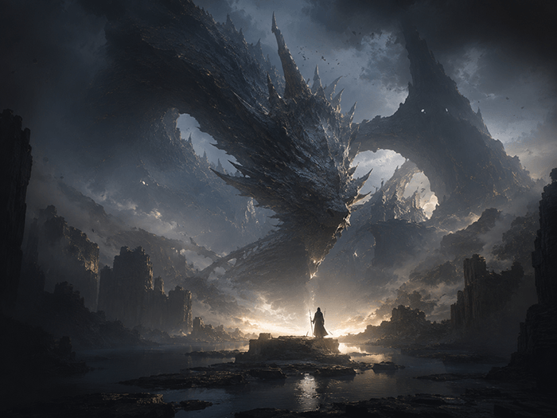

雨夜霓虹街头 · 分镜设定
主角在霓虹雨幕中回头，镜头从街面水光推到眼神特写，随后切入手部道具和追踪者剪影。
- 人物：少年主角、隐藏追踪者、远处路人。
- 节奏：慢推进、强反差光、结尾留悬念。

可视化叙事，高效沟通
人物 / 造型 / 表情
搭建你的叙事世界

一键导出，高效交付

强冲突开场、人物关系与镜头节奏一次完成。
稳定服饰、表情、视角与封面提示词。

把核心卖点拆成脚本、节奏与画面方向。

标题、主视觉与 CTA 的完整活动模板。

从参考图扩展运镜、动态描述与字幕提示。

大纲、标题、正文草稿与发布摘要一站生成。
整理输入、过程、结果与模型使用前确认。
教程标题、摘要、封面视觉与配图方向。
高燃对决封面，漫剧开场感拉满
清新治愈场景，夏日氛围一键生成
海边落日镜头，故事片头更有画面
国风神女设定，古装角色直接出图
活动海报脚本，首屏转化文案成稿
真人质感画面，短剧角色宣传图
暗黑幻想场景，战斗分镜快速定调
视频镜头感强，适合动作短片预览
经验帖配图，模型使用过程更清楚
轻幻想插画，故事配图更容易出片
正文优先展示，适合直接复制复用
带效果图，对照画面后再复制或同款
适合活动短视频首版草稿
带示例图，沉淀可复用场景关键词
适合官方教程和经验帖发布前整理
带视频感参考，方便复用镜头描述
一句话，直接生成一支广告。先用积分试一次，再选择适合自己的模型链路。
开场 0-3s：镜头扫过创作台，输入框里出现一句灵感，字幕同步出现“还在为第一版创意卡住？”
卖点 4-12s：文本、图片、视频模型并列切换，画面依次出现标题初稿、海报方向和短片镜头预览，突出多模型组合、积分体验和低门槛试用。
收口 13-18s：用户点击体验按钮，画面落到作品结果页，字幕收束为“先试一次，再把好结果继续做下去”。
把产品卖点拆成清晰、可复用的信息流短视频标题方向。
请把下面的产品卖点拆成 8 个信息流短视频标题方向。输入包含：产品名称、核心卖点、目标人群、用户痛点、希望传达的语气和不可夸大的边界。输出需要分为痛点型、结果型、对比型、场景型四组，每组给 2 个标题，并为每个标题补一句推荐封面文案。标题要具体、短、容易理解，不使用“全网最强”“唯一”“颠覆”等绝对化表达。